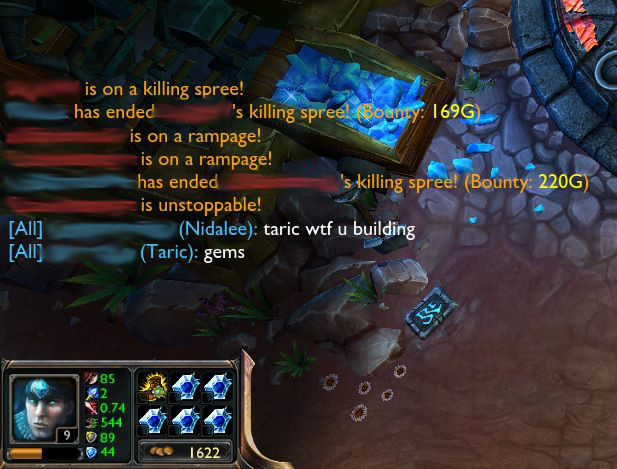
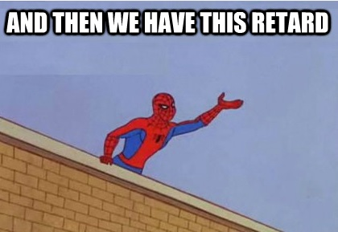
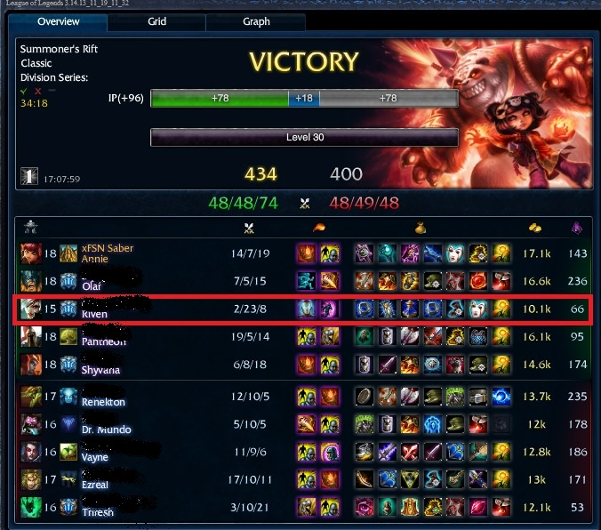

What’s the easiest thing to change about your gameplay? What will net you the fastest results?
The answer to these two questions is: attitude.
Now I'm sure that everyone and his high-elo grandmother has told you this same shit a thousand times, but imma repeat it here BECAUSE IT'S TRUE. Your attitude can win you games.
Sometimes, we just want to rage after playing ranked. In fact, I’m sure all of us have raged IN game just because someone made one stupid mistake or was just playing poorly all game.
Taric pls
But in all seriousness, we’ve all had our fair share of losing first blood and feeding games. Hell, we see pros do it all the time so why is it so hard to admit that we too sometimes screw up? It is incredibly easy to play the blame game and say someone lost the lane/game/promos for you, but in the end can you honestly say you played perfectly?
Hint: The answer is no
There is always something you could have done better no matter how big or small. It could be getting a higher creep score or not missing that crucial ultimate in the last teamfight. Never think that “oh my jungler lost me my lane” or “bot lost me the game”. If you have that mindset every game, then guess what? You’ll never learn from your mistakes. Instead, you should always have this mindset after losing a game:
1. What could I have done differently to win the game?Answers to this question can include but are not limited to: not losing your lane, warding for your team, and not getting caught.
Don’t be that guy who dies to a gank and blames the jungler for not warding for him
If you can think like this every game, then I guarantee that you’ll learn from your mistakes 10x faster than your average league player.
The next step is what I call the golden rule to chat:
2. When you type something in chat, it should be towards helping you win the gameNothing is more demoralizing than having another player say “really?” to you or even “why did you chase?”. Sometimes, a simple “...” after a death can put you on tilt. And lezbehonest, these are just the milder things you see in League chat.
If all these things can throw you off your game(and don’t lie, it usually does), then why would you say them to another player? They’re just another person just trying to enjoy the game like you. Before you hit that enter button, think for a second. Instead of thinking “omg what a noob he tried to chase a 1 hp nidalee” try to think “Wait a minute. If I was in his position I would probably be tempted to chase that nidalee too. I mean, she’s one hit from death! Instead of saying something demoralizing that will hurt my chances of winning, I should try to encourage him and say something like 'nice try' instead.”
I have never seen anyone react negatively to a “nt”. Ever. But I HAVE seen flame wars start because people ask questions like “why did you do that?” Criticism like that only puts others on the defensive. It just distracts, demoralizes, and decreases your chances of winning. So basically...
3. Don’t criticize, condemn, or complain. Be lavish with your praise and compliments.Lastly, here’s a golden rule of yoloq that is always true:
4. Every game is winnableYou don’t think so? Take a look at this
The scaling on AP Riven is too damn high
This happened during my Diamond 1 promos. In my books, an intentionally feeding ap riven is worse than playing a 4v5, and yet my duo and I managed to carry the shit out of that game (Panth Annie bot too good). What would have happened if we gave up at champ select?
We would have lost 100%. In fact, my duo wanted to afk at the start, but instead we played it out. And we won against all odds.
When you play ranked, remember this if anything. When you give up, your chances of winning the game become 0%. Every yoloqueue game is winnable. Even when you think it isn't, playing out a game will at least help you learn how to overcome obstacles like mad trolls (yes AP Riven, I’m looking at you). And soon enough, you’ll know how to win 4v5s and make insane comebacks in ranked.
If you’re looking to really improve your attitude, try applying these rules one at a time to your ranked games. Whenever you lose, try to ask yourself what you could have done to win the game. For one game, try only saying positive things conductive to winning. Before you press that enter key, try to imagine how you would feel in their shoes. And lastly, remember that every game is winnable no matter how hopeless. Sometimes, you gotta just pray for that random dc.
Now go out there and queue up. You got this.
-xFSN Saber